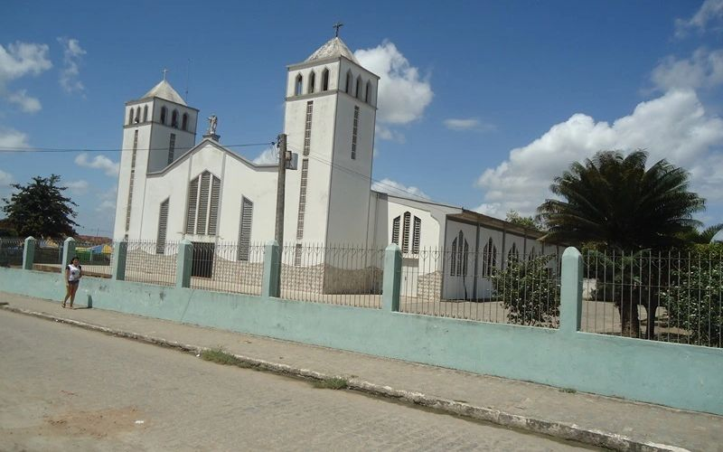

Nossa Historia
A Capela do Sagrado Coração de Jesus foi inaugurada no dia 1º de Janeiro de 1970, pelo Cônego Epitácio Rodrigues, e por muito tempo sediou as missas dominicais em Arapiraca.

Foto da Igreja em 2013
Uma bela foto da Nossa igreja
Institucional
Com anos de tradição, A paroquia Sagrado Coração de Jesus, hoje com nosso padre Jose Neto temos diversas pastorais que auxiliam nossa comunidade, desde as crianças com a pastoral da infancia, a crisma dos adultos, outras pastorais que temos é:
Pastoral da Comunicação
Que tem a missão de levar a palavra de nosso senhor Jesus Cristo, por meio das Redes Sociais
TLC
Grupo de jovens lideres
Pastoral Da Familia
Descrição
Pastoral da Juventude
Descrição
Juventude Missionária
Descrição
Infância e Adolescência Missionária
Descrição
ECC
Descrição
CEBs
Nossa Comunidade eclesiais de base